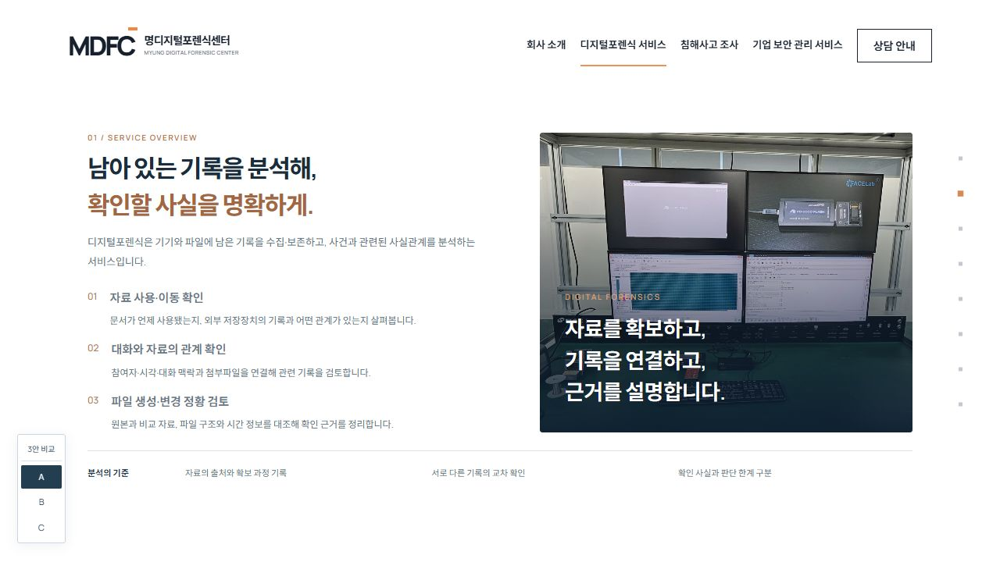
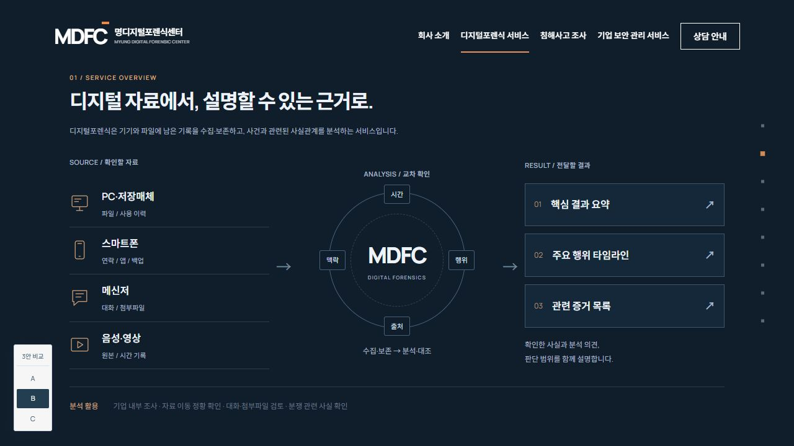
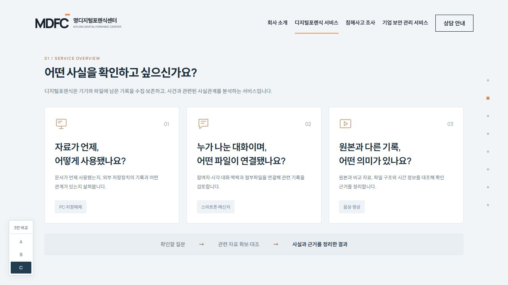

서비스 내용을 차근차근 읽는 구성
서비스 안내서형
사진과 함께 분석 대상, 확인 방법, 전달 결과를 정돈해 서비스의 내용을 자세히 살펴봅니다.
사진 · 분석 대상 · 확인 방법 · 전달 결과
전체 시안 보기DIGITAL FORENSICS / THREE STYLES
기존 첫 화면을 유지하고, 디지털포렌식의 분석 대상과 방법, 결과를 서로 다른 구성으로 안내합니다.
서비스 상세 페이지 디자인 미리보기
서비스 내용을 차근차근 읽는 구성
사진과 함께 분석 대상, 확인 방법, 전달 결과를 정돈해 서비스의 내용을 자세히 살펴봅니다.
사진 · 분석 대상 · 확인 방법 · 전달 결과
전체 시안 보기

궁금한 질문에서 시작하는 안내
의뢰자가 궁금해하는 질문을 중심으로 분석 기준과 설명할 수 있는 근거를 연결해 안내합니다.
질문 → 분석 기준 → 설명 가능한 근거
전체 시안 보기